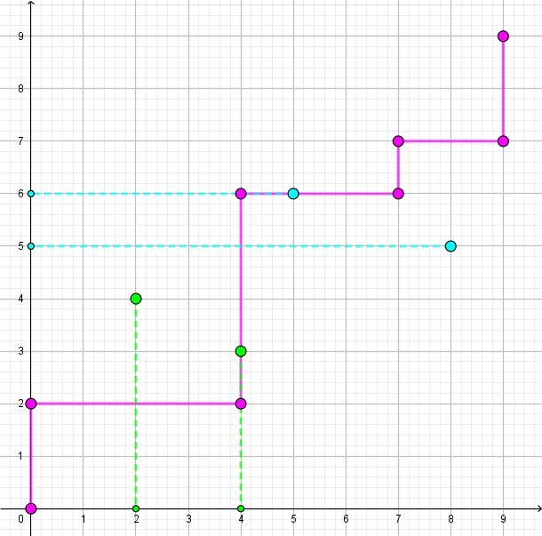
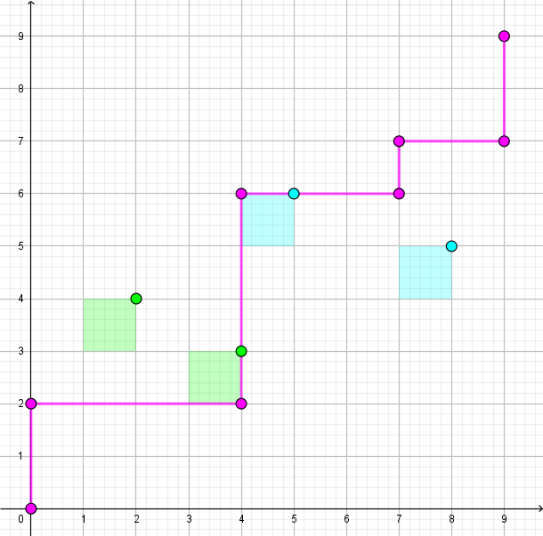

数轴上有 $N$ 个机器人和 $M$ 个洞，第 $i$ 个机器人在 $x_i$ 位置，第 $i$ 个洞在 $y_i$ 位置。保证这 $N + M$ 个位置互不相同。
现在你需要不断重复下列两种操作，直到所有机器人都进洞：
将所有机器人的坐标均 $+ 1$。
将所有机器人的坐标均 $- 1$。
每次操作结束后，如果某个机器人的坐标和某个洞的坐标重合，那么机器人就会落入该洞。
当所有机器人入洞完毕后，根据按顺序记下这 $N$ 个机器人所落入的洞的编号，可以得到的一个长度为 $N$ 的序列。
求有多少种本质不同的序列。两个序列本质不同当且仅当存在一个下标 $i$，它们位置 $i$ 上的值不同。
第一行包含两个正整数 $N, M$ ($N, M \leq 10^5$)，表示机器人的数量和洞的数量。
第二行包含 $N$ 个正整数 $x_1, x_2, \cdots, x_N$ ($1 \leq x_i < x_{i+1} \leq 10^9$)，依次描述各个机器人的初始坐标。
第三行包含 $M$ 个正整数 $y_1, y_2, \cdots, y_M$ ($1 \leq y_i < y_{i+1} \leq 10^9$)，依次描述各个洞的初始坐标。
保证对于 $\forall 1 \leq i \leq N; 1 \leq j \leq M$，有 $x_i \neq y_j$。
输出一行一个整数，表示不同序列的数量模 $10^9 + 7$ 的结果。
We'll update it later! (以上内容为官方题解)
容易注意到，对于在「最左边的洞」左边的机器人，它只能落入这个「最左边的洞」；同理，在「最右边的洞」右边的机器人，它也只能落入这个「最右边的洞」。也就是说，这些机器人落入的洞是唯一的，从而不会答案产生影响。
对于其它的机器人，由于它们一开始不在洞的位置，因此可以设其中一个机器人 $i$ 在第 $j$ 个洞和第 $j + 1$ 个洞之间 (不妨设这些洞之间已经排好序)，于是它最终可能落入的洞也只有这两个：$j$ 和 $j + 1$。
具体落入第 $j$ 个洞还是第 $j + 1$ 个洞呢？
我们考察这两个洞相对于机器人 $i$ 的位置，一个是 $y_j - x_i < 0$，另一个是 $y_{j+1} - x_i > 0$。
同时，可以发现，我们对整个序列操作的过程中，也可以使用 "相对位置" 来刻画：
初始状态的 "相对位置" 为 $0$，每右移 (全局 $+ 1$) 一次，整个格局的 "相对位置" 就增加 $1$；每左移 (全局 $- 1$) 一次，整个格局的 "相对位置" 就减少 $1$。
于是我们就能得到一个 "相对位置" 序列，举个例子：$\left[ 0, 1, 2, 1, 0, -1, 0, -1, -2, -3, -4, -3, -2, -1, 0, 1, 2, 3, 4, 5, 4, 5, 6, \cdots \right]$。
注意到，对于一个 "相对位置"，如果它出现多次，那么只有第一次是有效的 (因为在这个 "相对位置" 上，该进洞的都进洞了，后面也不会再由额外的进洞)，于是我们只需要考虑每个数的第一次出现，比如上例就变成了：$$ \left[ \color {fuchsia} 0, \color {fuchsia} 1, \color {fuchsia} 2, 1, 0, \color {fuchsia} {-1}, 0, -1, \color {fuchsia} {-2}, \color {fuchsia} {-3}, \color {fuchsia} {-4}, -3, -2, -1, 0, 1, 2, \color {fuchsia} 3, \color {fuchsia} 4, \color {fuchsia} 5, 4, 5, \color {fuchsia} 6, \cdots \right] $$
于是，机器人 $i$ 落入到 $j$ 还是 $j + 1$，完全取决于在整个序列中 $y_j - x_i$ 和 $y_{j+1} - x_i$ 谁先出现。若前者先出现，则落入 $j$；若后者先出现，则落入 $j + 1$。
我们将序列中非粉色的元素扔掉，得到类似下面的序列：$\left[ 0, 1, 2, -1, -2, -3, -4, 3, 4, 5, 6, \cdots \right]$
容易发现并证明这里面的正数是单调递增的，负数是单调递减的。而每添加一个数，要么令最大整数 $+ 1$，要么令最小负数 $- 1$。
这样正负之间的独立性使我们想到了二维坐标系：我们用 $x$ 表示负数的相反数，$y$ 表示正数，我们把每一时刻的 (最小负数的相反数, 最大整数) 二元组 $\left( x, y \right)$ 记录下来，则 $\left( x, y \right)$ 的轨迹就是一条从 $\left( 0, 0 \right)$ 出发，每次只能向右或向上 $1$ 个单位的 $\texttt{HV}$ 格路 $\xi$。
我们将机器人 $i$ 也看成坐标平面上第一象限中的一个点 $\left( x_i - y_j, y_{j+1} - x_i \right) \xrightarrow {\mathrm{def}} \left( X, Y \right)$，它向 $x$ 轴和 $y$ 轴引出两条线段 ($s_x : x = X; 0 \leq y < Y, s_y : y = Y; 0 \leq x < X$)。
显然格路 $\xi$ 不可能既与 $s_x$ 相交又与 $s_y$ 相交 (注意我们已经把点 $\left( X, Y \right)$ "抠" 掉了)，(又因为它的延伸性) 它必须恰和其中某一条相交。事实上，如果 $\xi$ 和 $s_x$ 相交，则 $i$ 落入 $j$；如果 $\xi$ 和 $s_y$ 相交，则 $i$ 落入 $j + 1$。
如上图，对于两个 "绿色" 的机器人，由于粉色的格路 $\xi$ 与 $s_x$ 相交，从而它们会落入相对靠左的洞；对于两个 "青色" 的机器人，由于粉色的格路 $\xi$ 与 $s_y$ 相交，从而它们会落入相对靠右的洞。
而与谁相交还是比较麻烦，我们再稍稍改动一下模型：
对于每一个机器人点 $\left( X, Y \right)$，将它转变为一个以 $\left( X, Y \right)$ 为右上角，边平行于坐标轴的单位正方形 $sq_i$。于是，$i$ 落入 $j \Leftrightarrow \xi$ 与 $s_x$ 相交 $\Leftrightarrow sq_i$ 在 $\xi$ 的左上方，$i$ 落入 $j + 1 \Leftrightarrow \xi$ 与 $s_y$ 相交 $\Leftrightarrow sq_i$ 在 $\xi$ 的右下方。如下图所示：
于是整个问题就被转化成了：给定坐标平面上若干个单位正方形，你现在要用一条 $\texttt{HV}$ 格路去分隔它们，求有多少种不同的分隔结果 (左上方/右下方)。
类似这里对格路处理的技巧，我们对于产生相同的分隔结果的一类方案，建立一个 "规范方案"：
这里 "规范方案" 的定义是：对于每一个 $\texttt{VH}$ 子串，它都是不可替换的 —— 换句话说，如果将它改为 $\texttt{HV}$，则会使一个青色正方形变 "绿"。
比如上图，就不是一个 "规范方案"：因为 $\left( 0, 2 \right), \left( 7, 7 \right)$ 处的 $\texttt{VH}$ 可以被替换为 $\texttt{HV}$。
容易使用调整法证明：对于一类可能的分隔结果，存在唯一一种 "规范方案"，产生这种结果。
于是我们只需要统计有多少种不同的 "规范方案" 即可。
由 "规范方案" 的定义可知，每个 $\texttt{VH}$ 子串唯一对应着一个青色正方形，且这些青色正方形的横、纵坐标分别递增；反之，一个横、纵坐标分别递增的青色正方形序列，也可以唯一对应到一种 "规范方案"。
在做了 $N$ 次一一对应后，我们终于得到了一个可观的描述方式：「青色正方形序列」的计数。
开始愉快地 DP 吧！设 $f_i$ 表示最后一个青色正方形为 $i$ 的不同序列个数。
设第 $i$ 个正方形的坐标为 $\left( X, Y \right)$，则转移方程非常简单：$$ f_i = 1 + \sum_{X_j < X_i \wedge Y_j < Y_i} f_j $$
最后不要忘记空集，所以答案就是 $1 + \sum\limits_i f_i$。
这样暴力转移是 $O \left( N^2 \right)$ 的，不过注意到它的本质是二维数点，容易使用树状数组等数据结构将其优化到 $O \left( N \log N \right)$。
#include <bits/stdc++.h>
typedef std::pair <int, int> pr;
const int N = 100054, mod = 1000000007;
int n, m, nR, nH;
int r[N], h[N];
pr p[N];
inline void add(int &x, const int y) {x += y - mod, x += x >> 31 & mod;}
namespace BIT {
#define lowbit(x) (x & -x)
int x[N];
int sum(int h) {int s = 0; for (; h > 0; h -= lowbit(h)) ::add(s, x[h]); return s;}
void add(int h, int v) {for (; h <= m; h += lowbit(h)) ::add(x[h], v);}
}
namespace DC {
int F[N]; pr D[N];
int Discretize(int n) {
int i, cnt = 0;
std::sort(D, D + n);
for (i = 0; i < n; ++i)
F[D[i].second] = (i && D[i].first == D[i - 1].first ? cnt - 1 : (D[cnt] = D[i], cnt++));
return cnt;
}
}
int main() {
int i, j = 0, t, ans = 1;
scanf("%d%d", &nR, &nH);
for (i = 0; i < nR; ++i) scanf("%d", r + i);
for (i = 0; i < nH; ++i) scanf("%d", h + i);
for (i = 0; i < nR; ++i) {
for (; j < nH && h[j] < r[i]; ++j);
if (!j || j == nH) continue;
p[n++] = pr(r[i] - h[j - 1], r[i] - h[j]);
}
std::sort(p, p + n), n = std::unique(p, p + n) - p;
for (i = 0; i < n; ++i) DC::D[i] = pr(-p[i].second, i);
m = DC::Discretize(n);
for (i = 0; i < n; ++i) add(ans, t = BIT::sum(DC::F[i]) + 1), BIT::add(DC::F[i] + 1, t);
printf("%d\n", ans);
return 0;
}
坑1：不要忘记对原来的点去重！这点非常重要，因为坐标相同的点对应的正方形的最终颜色一定是一样的，而不会一部分是青色，一部分是绿色。因此转移时必须手动将其调整成 $1$ 个正方形。
坑2：在使用树状数组之前不要忘记将坐标离散化。
坑3：注意限制条件是 $X_j < X_i \wedge Y_j < Y_i$，因此按照第一维排序后应按照第二维降序排序 (当然你可以把一行作为一个整体处理，方法很多)。